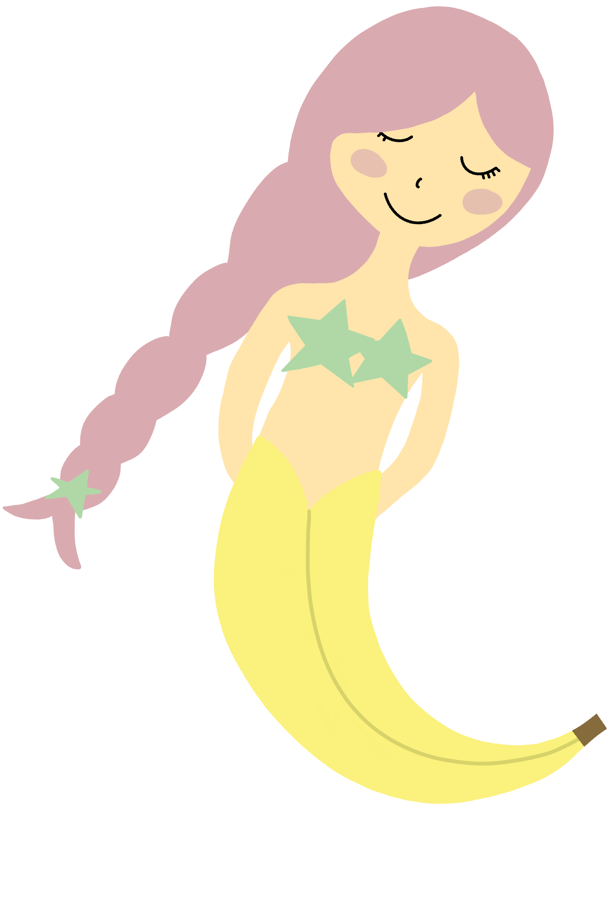

Life’s A
Magical Place,
Drink up!
Try our oatsome, versitile,
plant based milk alternative
Strawberry
Dreams
Every morning Pegasus would wake up with a spring in his step and an extra loud neigh to eat his favorite breakfast, strawberries. His friends would tease him because he ate so many he would turn red! One night Pegasus was dreaming of soaring away from the kingdom in the clouds with Princess Jude. As he was dreaming, he began to feel the wind in his mane. It quickly occurred to him he wasn’t dreaming! He was flying! He had sprouted wings in his sleep and now he was free to roam wherever his heart desired!

Blueberry
Bliss
Swimming across the ocean was Norby's favorite thing to do! He would swim all day long until his Mom called him to come home. As he swam he snacked on blueberries. His mom would pack him a lunch but all he ate was blueberries. As he was swimming he ran into a coral reef and bumped his horn. The crash made him fall in to a deep sleep and when looking into a seashell he noticed his horn had turned blue! The blueberries he had eaten were magic and saved him when he got into his accident, now he was a blueberry Narwhal!
Banana
Bonanza
Coralie was different then all the other mermaids. She often would rather sing in the reef instead of play. One day as she was swimming through the reef she noticed there were bananas growing on a tree. This was unusual because normally the only time she got to eat bananas is if a ship crashed nearby and their cargo spilled. Coralie loved bananas! Without thinking she grabbed one off the tree and gobbled it down, despite what her Mom always told her, never to eat food from strange places. Her tail began to turn into a giant banana and now she was a banana mermaid!
 